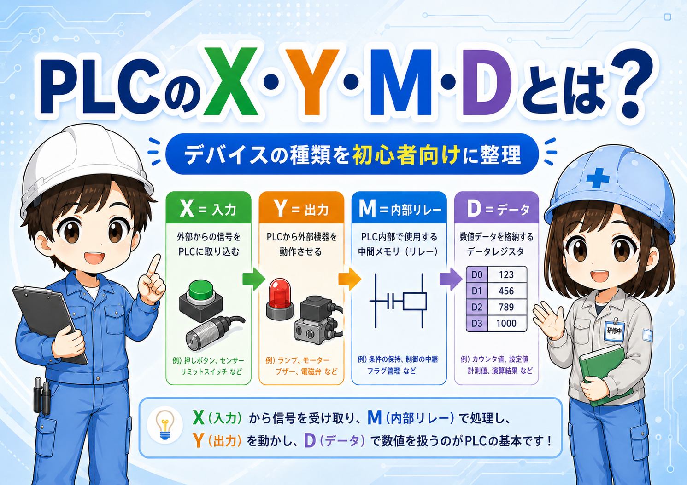
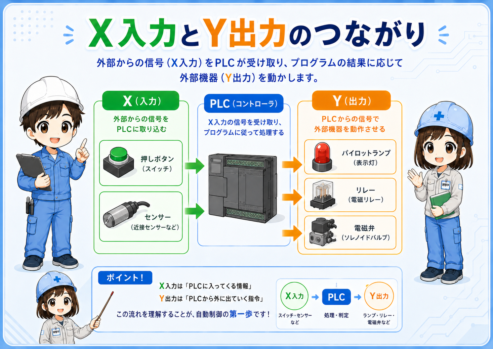
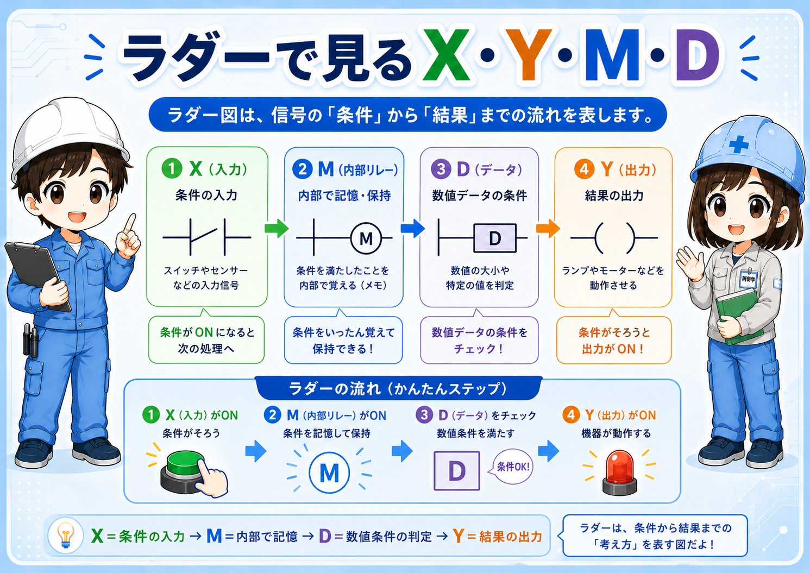
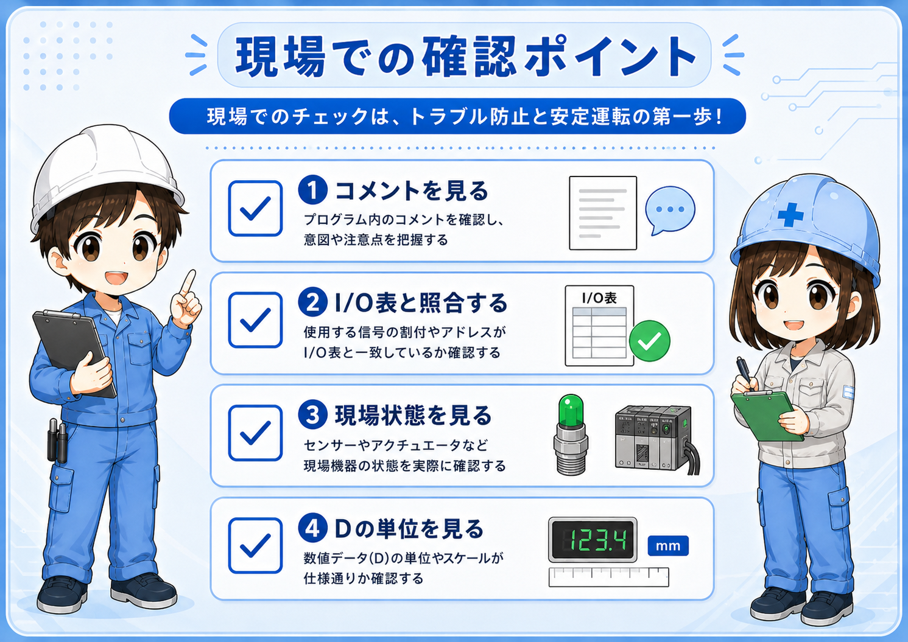

1. 先に結論
PLCのX・Y・M・Dは、ラダーやモニタ画面で信号や数値を扱うためのデバイスです。最初は、細かい番号範囲を覚えるよりも、それぞれが何の役割で使われやすいかをつかむ方が大切です。
三菱電機系のPLCでは、現場でXを入力、Yを出力、Mを内部リレー、Dをデータレジスタとして見る場面が多くあります。ただし、使える範囲や細かな仕様はPLCの機種・CPU・プロジェクト設定によって変わるため、実機では必ず公式マニュアルやプロジェクト設定を確認します。
まずは4つの役割だけ押さえる
Xは外から入る信号、Yは外へ出す信号、MはPLCの中だけで使うメモ、Dは数値を入れておく箱。このイメージを持つと、ラダーの条件やコイルを追いやすくなります。

先輩X・Y・M・Dは、最初から細かい番号を暗記しようとしなくていいよ。まずは「どんな役割か」を見るのが先だね。

新人入力はX、出力はY、PLC内部のメモはM、数値はD、という感じで入口をつかめばいいんですね。
2. X・Y・M・DはPLC内の住所のようなもの
PLCのラダーでは、押しボタンやセンサーの状態、ランプや電磁弁を動かす命令、内部で一時的に覚えておく状態、数値データなどを扱います。それらを区別して見るために、X・Y・M・Dのようなデバイス表記が使われます。
たとえば、X0、Y10、M100、D200のように、アルファベットと番号を組み合わせて表すことがあります。この番号は「どこを見ているか」「どこへ書いているか」を示す目印になります。

| デバイス | よくある役割 | 初心者向けのイメージ |
|---|---|---|
| X | 入力信号 | 押しボタン、センサー、リミットスイッチなど、外からPLCへ入る信号を見る。 |
| Y | 出力信号 | ランプ、リレー、電磁弁など、PLCから外へ出す命令を見る。 |
| M | 内部リレー | PLCの中だけで使うON/OFFメモ。条件の一時保存や状態保持に使う。 |
| D | データレジスタ | 数値を入れる箱。カウント値、設定値、演算結果などを扱う。 |
3. XとYは、外部との入出力を見る時に使う
XとYは、現場の機器とPLCをつなぐ入出力として見ることが多いデバイスです。Xはセンサーや押しボタンなどからPLCへ入ってくる信号、YはPLCからランプやリレーなどへ出ていく信号として整理できます。
ただし、実際のI/O割付は設備ごとに決まります。X0だから必ずこのセンサー、Y0だから必ずこのランプ、と決めつけるのではなく、図面・I/O表・PLCプログラムを合わせて確認します。

Xを見る時
押しボタンを押した時やセンサーが反応した時に、PLC入力としてON/OFFが変わるかを確認します。
Yを見る時
ラダー条件が成立した時に、ランプ・リレー・電磁弁などへ出力が出ているかを確認します。
実配線はX/Yだけで判断しない
X/Yは理解の入口として便利ですが、配線や端子番号、I/Oユニットの仕様は設備ごとに異なります。作業時は図面、I/O表、メーカー公式資料、現場ルールを優先してください。
4. MデバイスはPLC内部で使うON/OFFメモ
Mデバイスは、内部リレーとして使われることが多いデバイスです。外部の端子に直接つながるというより、PLCの中で条件をまとめたり、状態を一時的に覚えたりするために使います。
たとえば、「自動運転中」「異常発生中」「準備完了」「一度押されたことを覚える」といった状態をMで持たせることがあります。XやYと違って、Mは現場の線が直接つながっているというより、ラダー内で使う内部の目印として見ると分かりやすいです。
Mはラダーを読みやすくするための中継点にもなる
条件が増えてくると、すべてを一つの回路に詰め込むと追いにくくなります。Mを使って「この条件が成立した」という状態を作ると、後段のラダーを整理しやすくなります。
新人Mって、実際のリレーみたいな部品が盤の中にあるわけではないんですか？
先輩そう。MはPLC内部で使うリレーのような考え方だね。現物のリレーと混同しないようにすると読みやすいよ。
5. Dデバイスは数値を扱う場所
Dデバイスは、データレジスタとして使われることが多いデバイスです。X・Y・MがON/OFFの状態を見るイメージなら、Dは数値を入れておく箱として考えると分かりやすくなります。
たとえば、カウンタの現在値、タイマの設定値、タッチパネルから入力した数値、センサーやアナログ値を変換した数値などを扱う時に使われます。ただし、数値の単位や意味はプログラムやコメントによって変わるため、D100という番号だけで中身を決めつけることはできません。
DはON/OFFではなく数値を見る
0、100、2500のような値が入り、設定値や現在値として扱われることがあります。
コメントと単位を見る
Dデバイスは、何の数値なのか、単位が何なのかをコメントや仕様書で確認します。
Dの中身は設備ごとに意味が違う
同じD100でも、ある設備では設定温度、別の設備ではカウント数、さらに別の設備では位置データかもしれません。デバイスコメント、タッチパネル画面、仕様書、ラダーの使われ方を合わせて確認します。
6. ラダーでは「条件」と「結果」に分けて見る
ラダーを見る時は、X・M・Dなどが条件側に使われ、YやMなどが結果側に使われることがあります。たとえば、XがONしたらMをONする、MがONしたらYをONする、Dの値が一定以上ならMをONする、といった流れです。
初心者のうちは、どのデバイスが条件で、どのデバイスが結果として動いているのかを分けて見ると、ラダーを追いやすくなります。

| 見る場所 | よく出るデバイス | 確認すること |
|---|---|---|
| 条件側 | X、M、Dの比較条件など | 入力が入っているか、内部条件が成立しているか、数値条件が合っているか。 |
| 結果側 | Y、M、Dへの書き込みなど | 出力を出しているか、内部状態を作っているか、数値を更新しているか。 |
| 確認時 | コメント、I/O表、図面 | 番号だけで判断せず、何の信号・何の数値なのかを合わせて見る。 |
7. 現場で見る時の注意点
X・Y・M・Dを読む時は、デバイス名だけで決めつけないことが大切です。特に、実機のトラブル確認では、画面上のON/OFFや数値だけでなく、現場の状態、図面、I/O表、コメントを合わせて見ます。

- まずコメントを見る：X10やM200だけで判断せず、デバイスコメントがあるか確認します。
- I/O表と照合する：XやYは、図面やI/O表で実際の機器と結びつけます。
- 現場状態を見る：センサーランプ、押しボタン、表示灯、リレー、電磁弁などの状態を確認します。
- Dは単位を見る：Dデバイスの数値は、mm、秒、回数、温度など、何の単位かを確認します。
強制ON/OFFや値変更は慎重に
X・Y・M・Dのモニタや変更は便利ですが、Y出力や内部条件、Dの設定値を不用意に変えると設備が動く可能性があります。操作する場合は、設備状態、周囲確認、社内ルール、メーカー公式資料を確認してください。
8. まとめ
PLCのX・Y・M・Dは、ラダーを読むための基本的な目印です。最初は細かな仕様を覚えるよりも、Xは入力、Yは出力、Mは内部リレー、Dは数値データとして整理すると、ラダーの流れを追いやすくなります。
- Xは、現場からPLCへ入る入力信号を見る時によく使う
- Yは、PLCから現場機器へ出す出力信号を見る時によく使う
- Mは、PLC内部で状態を覚えるON/OFFメモとして使う
- Dは、設定値や現在値などの数値データを扱う
- 実機では、デバイスコメント、図面、I/O表、公式資料を合わせて確認する